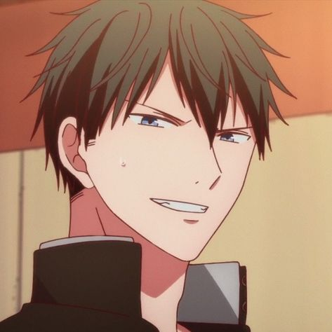
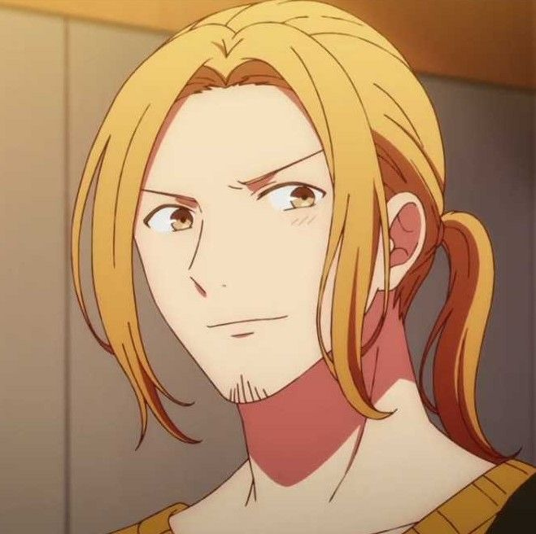
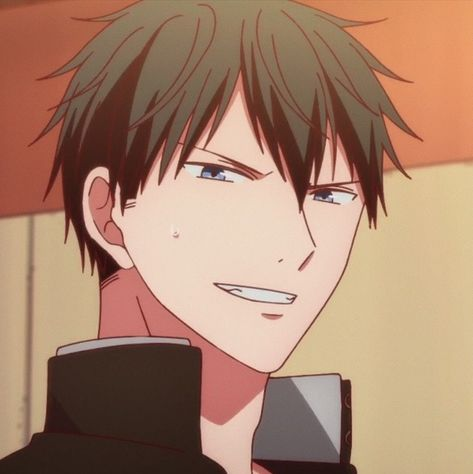
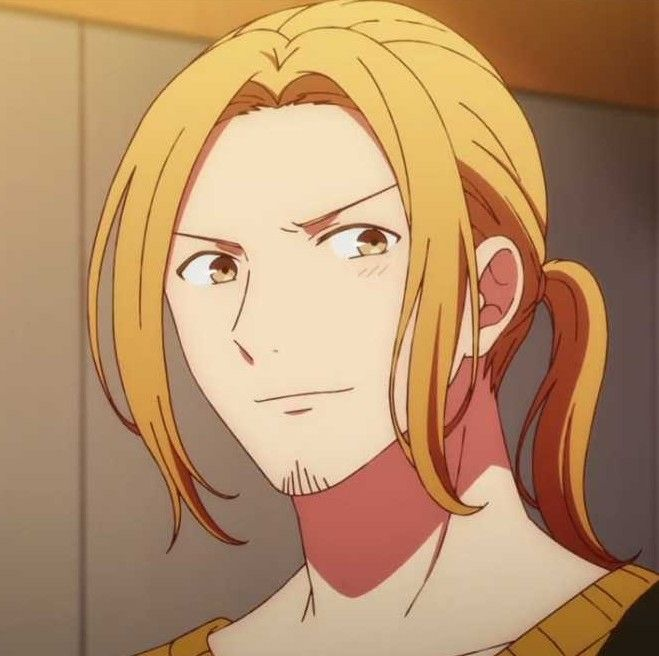
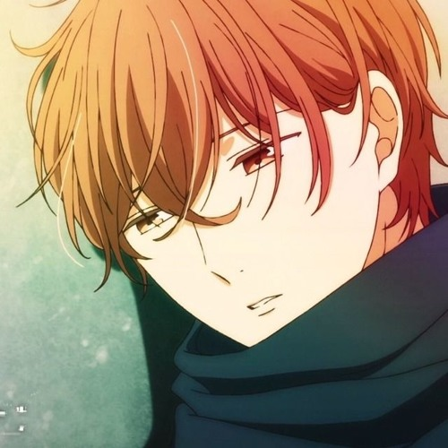
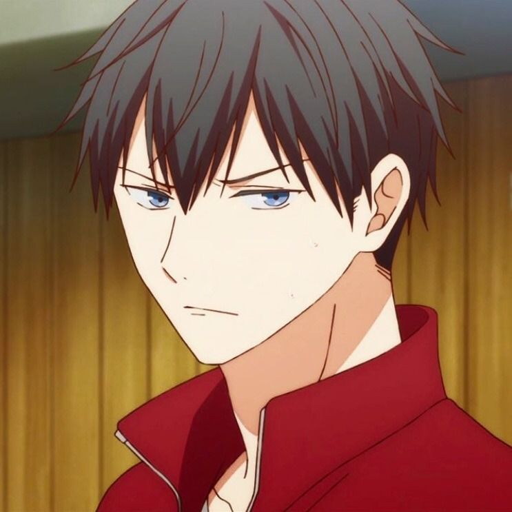

Sobre

Este site foi feito para fins educacionais!
>Aqui se encontra um pouco de tudo sobre a banda.

Aqui se encontra algumas Informações sobre as animações
Aqui se encontra informações sobre os personagens
Given
Given é uma das mais novas estreias da temporada de Verão/2019, e estava sendo esperado por muitos (e me incluo nisso) com muitas expectativas. Esse é o grande anime do gênero “Boy’s Love” (amor entre garotos) do ano, e eu já te adianto que não poderia estar mais feliz com o resultado final do anime. Given tem tudo o necessário para segurar o seu espectador alvo; Fofura? Tem. Drama? Tem também. Alguns dos personagens e tramas mais relacionáveis que eu já vi num anime do gênero? Sim!! Tem isso também.
 




Em Given acompanhamos a história de Satou Mafuyu (Yano Shougo), um garoto calmo que mesmo sem entender nada de musica é dono de uma guitarra e quer aprender a tocar o instrumento, ele encontra por acaso Ritsuka Uenoyama (Uchida Yuuma), que troca a corda da guitarra que estava quebrada. Depois de ouvir Mafuyu cantar, Uenoyama se encanta pela voz e o convida para sua banda e o relacionamento dos dois começa a crescer aos poucos, mas será que Mafuyu conseguirá superar seus traumas do passado?
Genêro: Drama, Romance de amor, Boy's love, Música
Personagens
Mafuyu Satou

- Kanji - 佐藤 真 冬
- Gênero - Masculino
- Idade - 16
- Altura - 173cm
- Aniversário - 28 de fevereiro (Peixes)
- Ocupação - Estudante
- Função - Vocalista, Guitarrista
- Instrumento (s) - Guitarra (Gibson ES-330 - Vermelha)
Uenoyama Ritsuka

- Kanji - 上 ノ 山 立夏
- Gênero - Masculino
- Idade - 16
- Altura - 175cm
- Aniversário - 1 de agosto (Leão)
- Ocupação - Estudante
- Função - Guitarrista
- Instrumento (s) - Guitarra elétrica (Telecaster Custom - Black)
Haruki Nakayama

- Kanji - 中山 春樹
- Gênero - Masculino
- Idade - 22
- Altura -178cm
- Aniversário - 13 de julho (câncer)
- Ocupação - Barista
- Função - Baixista
- Instrumento (s) - Baixo (baixo jazz Fender / 70s)
Akihiko Kaji

- Kanji - 梶 秋 彦
- Gênero - Masculino
- Idade - 20
- Altura - 184 cm
- Aniversário - 21 de outubro (Libra)
- Ocupação - Estudante de faculdade
- Função - Baterista
- Instrumento (s) - Bateria, violino, guitarra e baixo
Ugetsu Murata

- Kanji - 村田 雨 月
- Gênero - Masculino
- Idade - 21
- Altura - 175cm
- Aniversário - 6 de junho (Gêmeos)
- Ocupação - Musico
- Função - Violinista
- Instrumento (s) - Violino
Galeria de Imagens
Algumas cenas memoráveis das animações de given
Mafuyu feliz porque ia aprender a tocar guitarra.
O pen drive com a gravação do show.
Uecchi e Satou se preparando para os testes
Kaji e Haruki passando a tarde juntos.
Haruki e Akihiko conhecendo Mafuyu
Akihiko e Ugetsu tocando violino juntos.
Ugetsu passeando no parque com Akihiko.
O dia que tiraram suas primeiras fotos profissionais.